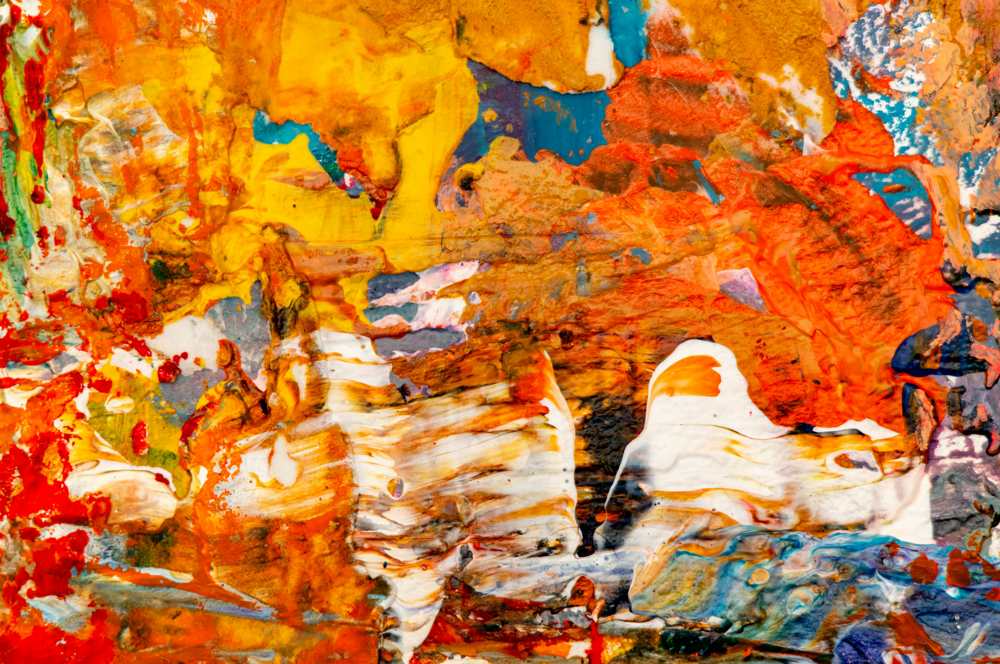

Pikturë në Kanavacë e Personalizuar
Kategori: Handmade

Çmimi: 2500 Lekë
Ky produkt ofron një pikturë të bërë me porosi në kanavacë, bazuar në foton ose idenë tuaj. Një dhuratë unike për ditëlindje, martesë apo për të dekoruar hapësirën tuaj me diçka me vlerë emocionale.
- Dimensionet: 30x40 cm (mundësi përmasa të tjera me porosi)
- Akrilikë mbi kanavacë, e papërshkueshme nga uji
- Koha e realizimit: 5-7 ditë